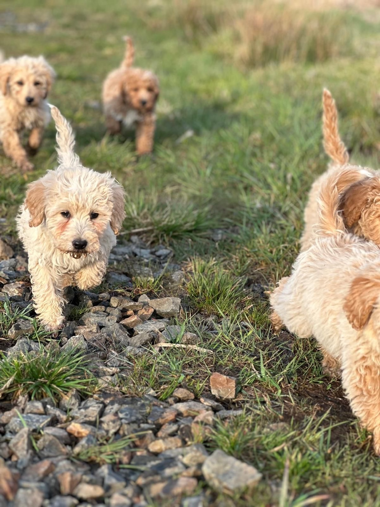
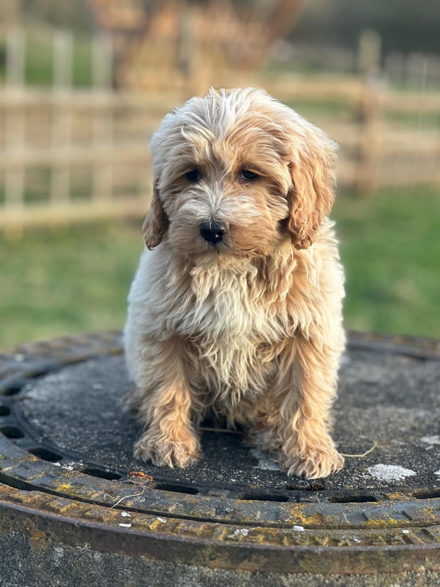
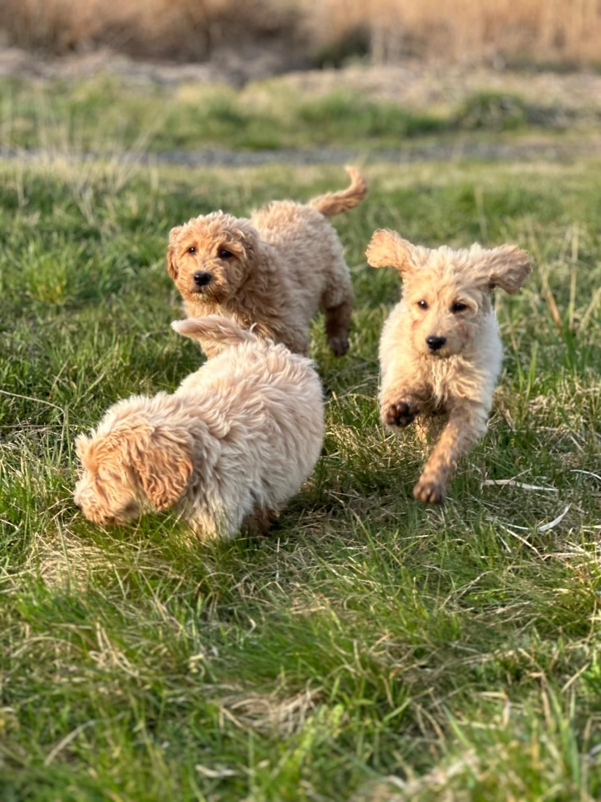
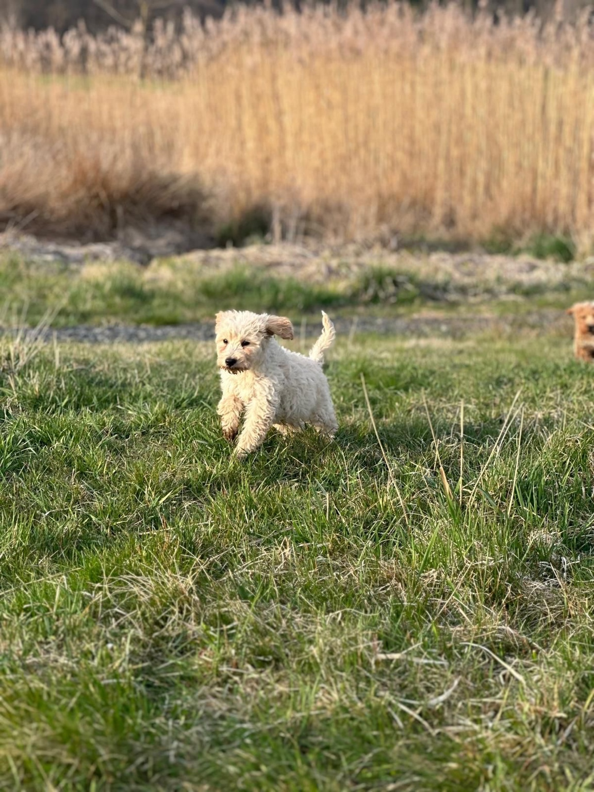
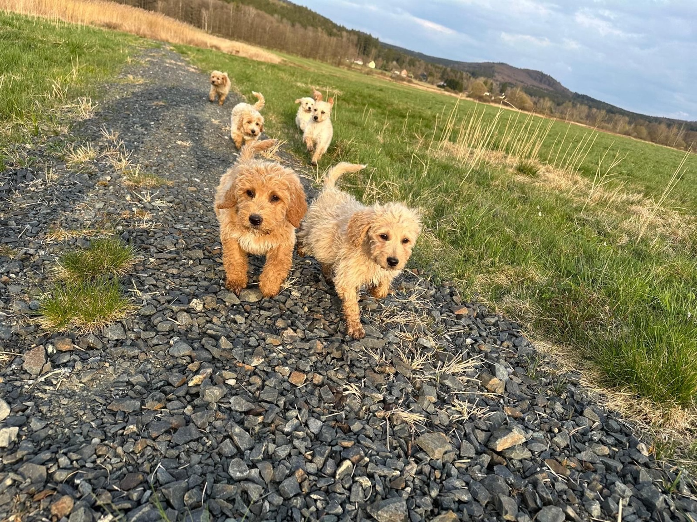
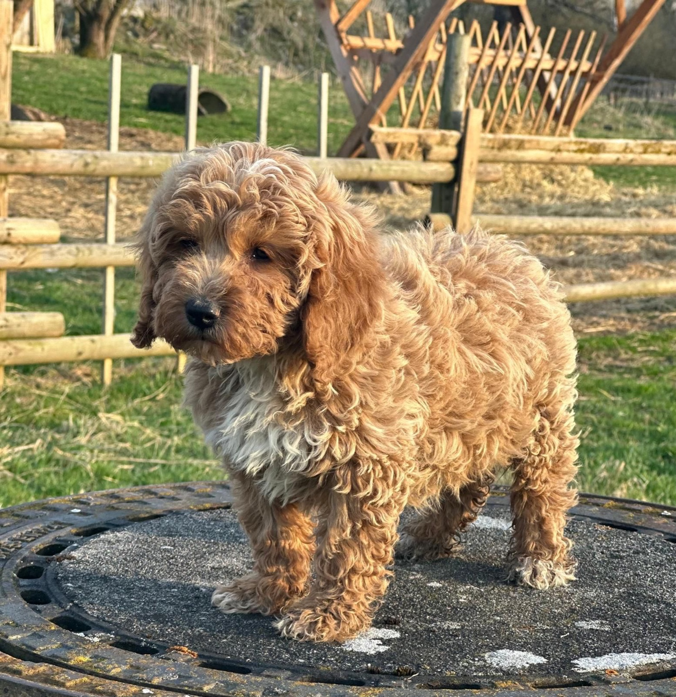

Medium Goldendoodles – Rückblick
Ein kleiner Rückblick auf einen unserer vergangenen Würfe. Ein ähnlicher Wurf dieser Elterntiere ist für Ende des Jahres geplant.






Mini Goldendoodles – Rückblick
Bilder und Infos zu früheren Mini-Würfen folgen bald.